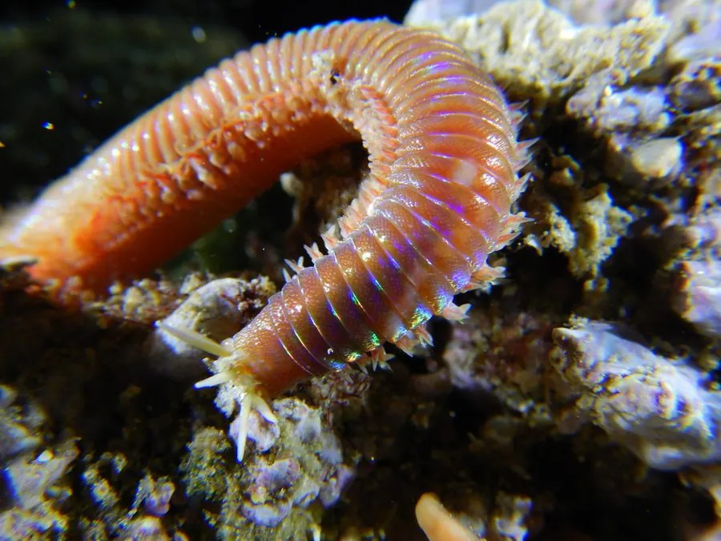

其他无脊椎动物 · 动物界
岩虫 Marphysa sanguinea

栖居在潮间带泥沙中的大型多毛类，身体红褐、分节明显，是海钓常用的活饵，也常被用作鱼虾养殖的饵料生物。
- 分类
- 门环节动物门纲多毛纲目矶沙蚕目科矶沙蚕科属岩虫属
- 栖息环境
- 潮间带中低潮区的泥沙滩涂与河口，营穴居生活
- 地理分布
- 中国黄海、渤海、东海沿岸，日本、朝鲜半岛及欧洲沿海
- 保护级别
- 暂无评估
物种志
岩虫体长20–40厘米，宽约0.5–1厘米，身体由一百多个体节组成，每节两侧生有疣足和成束的刚毛，背面呈红褐或暗红色，腹面较浅。头部有数条触须和一对颚，颚坚硬呈黑褐色，咬合有力。
它穴居在潮间带中低潮区的泥沙滩涂和河口，洞穴常呈分支状，退潮后可在滩面上看到成片的孔口。岩虫是杂食性的沉积取食者，吞食泥沙中的有机碎屑和小型生物。繁殖季节，成熟的个体变态为生殖个体，夜间群浮到水面排卵排精。由于蛋白质含量高、耐挂钩，岩虫是海钓最常用的活饵之一，被大量翻沙挖取，过度采挖会破坏滩涂结构，影响其他底栖生物。退潮后翻开的石块和贝壳下面，也常能见到它盘曲的身体。
形态与习性
- 体长20–40厘米，身体由一百多个体节组成
- 颚头部有一对黑褐色硬颚，咬合有力
- 栖息穴居于潮间带泥沙中，洞穴常呈分支状
- 食性吞食泥沙中的有机碎屑和小型生物
- 繁殖生殖个体夜间群浮到水面排卵排精
- 用途海钓活饵与鱼虾养殖饵料，被大量采挖
趣味知识
- 岩虫是海钓者最常用的活饵之一，耐挂钩、腥味重。
- 繁殖季节它会变成生殖个体，夜里浮到水面集体产卵。
- 过度翻沙挖虫会破坏滩涂结构，影响其他底栖生物。